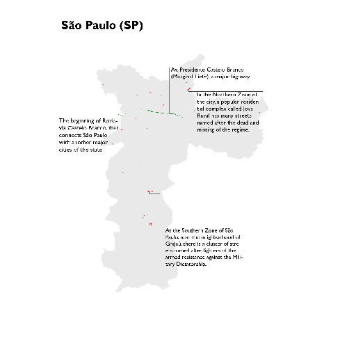

NARROWS ALLEYS AND MAJOR HIGHWAYS
Not only the streets named after generals and officials are in a higher number than those named after their victims, there is also an important geographical difference between them.
While major roads like the aforementioned Castelo Branco Avenue and the Costa e Silva Bridge (mostly known as Rio-Niterói Bridge, in Rio de Janeiro) remember the regime, the homages to dissidents tend to concentrate in peripherical and poorer areas.
The city of São Paulo, where the Castelo Branco Avenue and the Vladimir Herzog Street lie so close together, is a good example of this contrast. It is one of the places in the country with more homages to the victims of the regime, but the location of those tells a story by itself.
Most of them are clustered in poorer areas of the northern and southern regions of the municipality, in the neighborhoods of Grajaú and Jova Rural, respectively. The same happens in Rio de Janeiro, where the streets named after the resistance against the dictatorship tend to concentrate in the working-class neighborhood of Bangu.
A great ammount of the places that remember the military leaders were named still during the regime, referencing the junta while it was still on power. In contrast, the addresses that recall the missing and killed only started to appear after the end of the regime, due to efforts made by different sectors of civil society.

Click images to open them in higher definition.
CHANGING NAMES
In the center of São Paulo, an overpass runs for around 3.5km, crossing four different neighborhoods. Popularly known as “Minhocão” (“Big Worm”) for it’s length and appearance, this controversial urban intervention was officially called “Elevated Highway Costa e Silva”, referencing the second president of the Military Dictatorship, since it was finished, in 1970, until 2016.
In mid-2016, though, the name was changed to “Elevated Highway President João Goulart”, honoring the last civil leader to rule the country before the army took power in 1964.
This change is part of a movement that happens as Brazilian institutions look back to the conflicts of the past and try do decide how it will reflect on their present and future. Although President Goulart was persecuted and lost his political rights during the military regime, he was not considered a victim of human rights violations. Nevertheless, Paulo Stuart Wright was.
A former house representative in the state of Santa Catarina, Wright was persecuted by the military ever since the beginning of the regime. He lost his political rights and left the country to live in Mexico in 1964, only to return clandestinely in the next year, as a militant of a left-wing underground group. He disappeared in 1973, and his killing was only confirmed when secret military files were opened eleven years later, close to the end of the junta’s government. In 2015, his memory, as well, was honored, when a highway in his state was named after him.
A CONFLICT IN THE OPEN
In one of the most dramatic moments of Brazilian politics in the last few years, the former president Dilma Rousseff, from the left-leaning Workers Party, was impeached in a process that started on the House of Representatives. In the night between the 16th and 17th of April, 2016, she lost the vote and was outed from office. At that time, the removal was supposed to last only until the end of the process that would then follow to the Senate, but eventually proved to be a path of no return.
Jair Bolsonaro, a former army captain and one of the most preeminent figures in the Brazilian far-right, was among the representatives that voted against Dilma – and he did that in a very controversial way.
“They lost in 1964 and lost again in 2016”, he said, comparing the military coup of the 60s and the recent impeachment. “For the memory of Colonel Carlos Alberto Brilhante Ustra, the terror of Dilma Rousseff […] I vote yes [to the impeachment]”.
Bolsonaro was paying homage to the man in charge of the DOI-CODI in the state of São Paulo, the military regime intelligence agency, from 1970 to 1974. Even though Ustra, who died free and claiming to have “no regrets” two years ago, always denied the practice of torture and executions under his supervision, he is widely recognized as one of the most violent officials of the dictatorship repressive forces.
His victims described being tormented with many different methods, including electric shocks and the insertion of live mice inside female prisoner’s vaginas. In some of the most brutal cases, those sessions were held in front of the loved ones of the dissidents, including their children. Dilma Rousseff herself spend months detained in the prisons of the DOI-CODI in the early 70s.
Bolsonaro’s statement sparked controversy and shock, but his popularity seems to stand unabated. He is currently third in most electoral polls, only behind Marina Silva, who competed in the last two elections but never made it to the second round, and the Workers Party leader and Dilma’s political godfather, Lula da Silva, who served as president from 2003 to 2010 and was himself arrested during the military regime.
Apart from Boslonaro’s popularity rise, in recent years movements that advocate for another “military intervention” have grown vocal. Some groups took to the streets regularly, especially during the protests against Dilma Rousseff’s government, demanding that the armed forces “save the country once again from communism”– evocating the rhetoric used by the army to justify the coup that hapenned 43 years ago.
Even if it’s hard to measure the actual relevance of those organizations, – the army commander-in-chief, Eduardo Villas-Boas, called sympathizers of this idea “crazy”– it goes to show that more than twenty years after the end of the regime, part of the population seems to look back to the dictatorship and see an answer for their problems and fears.
To say that there is a clear connection between all the lingering homages to the dictatorship and this movements is, indeed, a huge leap. Nevertheless, it’s one more evidence that the past is not only confined in street names, but regularly resurfaces again.